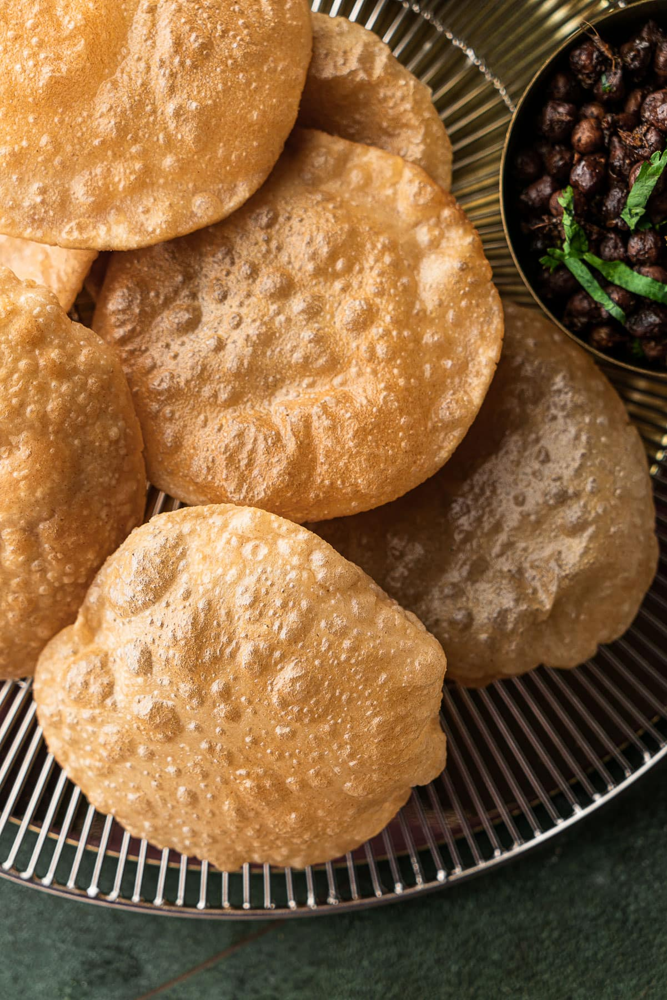

Poori is a crispy, golden deep-fried Indian bread that can be served with any dish, whether vegetarian or not, and your favorite pickle. The perfect poori is pale golden in color and puffed up almost like a ball. They're best eaten the day they are made.
Meal prep time : 1 hour 10 minutes
Servings : 8